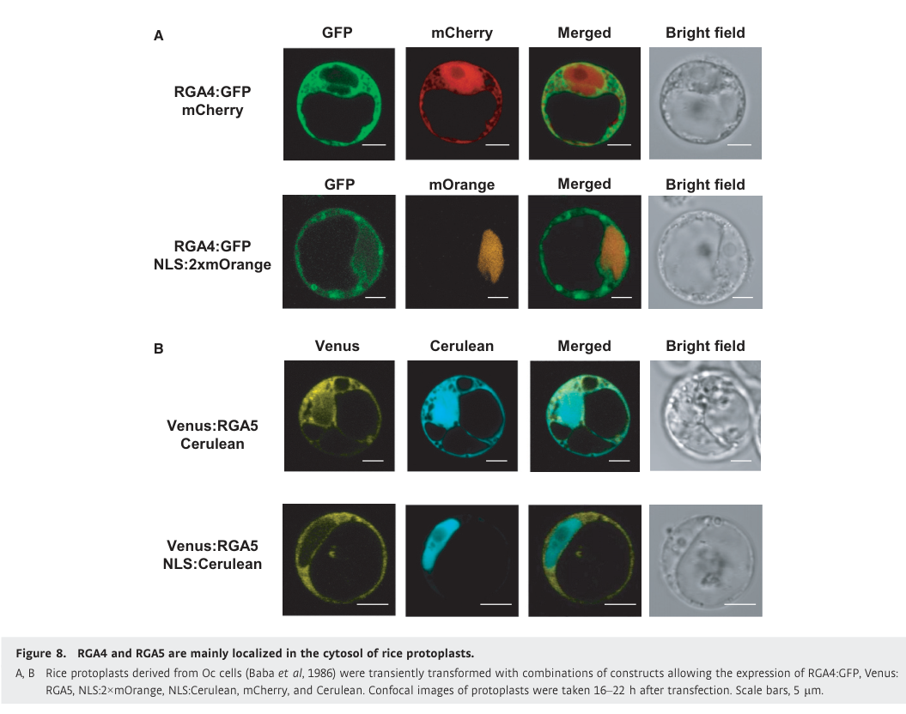

RGA5 (Os11gRGA5, SasRGA5) is a 1,116-residue intracellular coiled-coil nucleotide-binding leucine-rich repeat (CC-NB-LRR, NLR) immune receptor encoded at the Pia/Pi-CO39 blast-resistance locus on rice chromosome 11, where it lies head-to-head with its partner NLR gene RGA4. RGA5 is the sensor of the pair. Its C-terminal region, after the LRR, carries an integrated heavy-metal-associated (HMA; also called RATX1) domain that directly binds the sequence-unrelated MAX-family effectors AVR-Pia and AVR1-CO39 secreted by the rice blast fungus Magnaporthe oryzae. The HMA domain has a canonical HMA fold, but its metal-binding motif is degenerate, so it acts as an effector-binding decoy rather than as a metal-binding module. In the absence of effector, RGA5 forms homo- and hetero-complexes with RGA4 through their coiled-coil domains and represses the autoactive, cell death-inducing activity of RGA4; the RGA5 CC domain is required for this repression while the HMA domain is dispensable for it. Effector binding to the HMA domain relieves the repression, so that RGA4 triggers a hypersensitive cell death response and resistance. RGA5 does not itself activate cell death, and an intact RGA5 P-loop is not needed for repression or for effector recognition. Only the RGA5-A splice form, which keeps an intact HMA domain, is functional; the intron-retaining RGA5-B form is inactive. Both RGA5 and RGA4 localize mainly to the cytosol and do not move to the nucleus on effector recognition. RGA5 has become a scaffold for engineering new recognition specificities by redesigning its HMA domain.
| GO Term | Evidence | Action | Reason |
|---|---|---|---|
|
GO:0002758
innate immune response-activating signaling pathway
|
IDA
PMID:23548743 The rice resistance protein pair RGA4/RGA5 recognizes the Ma... |
ACCEPT |
Summary: RGA5 directly binds the M. oryzae effectors AVR-Pia and AVR1-CO39 and, together with RGA4, initiates the effector-triggered immune signaling that leads to resistance. As the receptor that perceives the ligand, RGA5 takes part in this signaling pathway.
Reason: RGA5 is the effector-binding receptor that starts the signaling pathway, so it does part of the work of the pathway rather than only being required for it. Direct binding is linked to function because an inactive AVR-Pia allele that does not bind RGA5-A is not recognized. GO:0002758 is the term used for plant NLR immune signaling (e.g. Arabidopsis RPS4). The more specific GO:0035872 (NLR receptor signaling pathway) is not used for any plant gene product, so it is not proposed here.
Supporting Evidence:
PMID:23548743
revealed direct binding of AVR-Pia and AVR1-CO39 to RGA5-A, providing evidence for the recognition of multiple Avr proteins by direct binding to a single R protein
PMID:23548743
Direct binding seems to be required for resistance as an inactive AVR-Pia allele did not bind RGA5-A
|
|
GO:0002758
innate immune response-activating signaling pathway
|
IEA
GO_REF:0000117 |
ACCEPT |
Summary: ARBA machine-learning transfer of innate immune signaling to an NLR protein. The experimental IDA row for the same term supports it.
Reason: Consistent with experimental evidence that RGA5 is the effector receptor that starts RGA4-dependent immune signaling.
Supporting Evidence:
PMID:25024433
RGA4 mediates cell death activation, while RGA5 acts as a repressor of RGA4 and as an AVR receptor
|
|
GO:0005515
protein binding
|
IPI
PMID:25024433 The NB-LRR proteins RGA4 and RGA5 interact functionally and ... |
MODIFY |
Summary: IPI with RGA4 (F7J0M4). RGA5 and RGA4 form hetero-complexes through their coiled-coil domains, and RGA5 uses this association to repress the autoactive cell-death activity of RGA4. The repression is specific: RGA5 does not suppress the autoactive NLRs Orin1 or L6.
Reason: Protein binding is uninformative. The same paper shows what the binding does: RGA5 physically associates with RGA4 through the CC domain, and the CC domain is required for inhibiting RGA4-triggered cell death. This fits molecular function inhibitor activity (GO:0140678), which is defined as inhibition of a target's activity through non-covalent binding. This MF is what tells the sensor (RGA5) apart from the executor (RGA4).
Proposed replacements:
molecular function inhibitor activity
Supporting Evidence:
PMID:25024433
RGA4 and RGA5 form homo- and hetero-complexes and interact through their coiled-coil domains
PMID:25024433
Neither Orin1- nor L6 MHV -mediated cell death was suppressed by RGA5 showing that its inhibition activity is specific
PMID:25024433
The RGA5 CC domain is necessary but not sufficient for repression of RGA4-mediated cell death, while its RATX1 domain is dispensable
|
|
GO:0005737
cytoplasm
|
IDA
PMID:25024433 The NB-LRR proteins RGA4 and RGA5 interact functionally and ... |
ACCEPT |
Summary: Functional Venus:RGA5 fusions co-localize with a cytosolic marker in rice protoplasts and are excluded from nuclei.
Reason: Directly supported by confocal imaging of a functional fusion protein. Cytosol (GO:0005829) is the more specific term, but cytoplasm is correct.
Supporting Evidence:
PMID:25024433
Similar results were obtained for Venus:RGA5 which co-localized with Cerulean in the cytosol but not with NLS:Cerulean in the nuclei
|
|
GO:0005737
cytoplasm
|
IEA
GO_REF:0000044 |
ACCEPT |
Summary: UniProt subcellular-location mapping of the experimentally determined cytoplasmic localization.
Reason: Consistent with the IDA evidence from rice protoplasts.
Supporting Evidence:
PMID:25024433
Localization studies in rice protoplast suggest that RGA4 and RGA5 localize to the cytosol
|
|
GO:0005829
cytosol
|
EXP
PMID:25024433 The NB-LRR proteins RGA4 and RGA5 interact functionally and ... |
ACCEPT |
Summary: RGA5 is mainly cytosolic in rice protoplasts and does not move to the nucleus after AVR-Pia recognition.
Reason: The most specific location term with direct experimental support. It is where RGA5 binds effectors and associates with RGA4.
Supporting Evidence:
PMID:25024433
Upon recognition of AVR-Pia, neither RGA4 nor RGA5 is re-localized to the nucleus
|
|
GO:0006952
defense response
|
IEA
GO_REF:0000002 |
ACCEPT |
Summary: InterPro2GO mapping from the plant disease resistance protein family (IPR044974). Broad but correct.
Reason: RGA5 is a resistance protein needed for effector-triggered defense against M. oryzae. The term is general but not wrong.
Supporting Evidence:
PMID:21251109
SasRGA4 and SasRGA5, that are located next to each other and oriented in the opposite direction are necessary for Pia function
|
|
GO:0009626
plant-type hypersensitive response
|
IEA
GO_REF:0000117 |
KEEP AS NON CORE |
Summary: ARBA transfer of the hypersensitive response to an NLR. For RGA5 the hypersensitive cell death depends on its effector recognition, but RGA4 carries it out.
Reason: RGA5 does not trigger cell death itself. Autoactive MHD-motif mutants of RGA5 cause no cell death, and the authors conclude that cell death signaling is activated only by RGA4. RGA5 sits upstream of the response as its receptor and gatekeeper, so the term is correct as an involvement but is not a core RGA5 function. It is core for RGA4.
Supporting Evidence:
PMID:25024433
These results support the conclusion that cell death signaling is activated exclusively by RGA4 and that AVR-Pia binding does not lead to RGA5 activation but solely to RGA4 de-repression.
|
|
GO:0009626
plant-type hypersensitive response
|
IMP
PMID:23548743 The rice resistance protein pair RGA4/RGA5 recognizes the Ma... |
KEEP AS NON CORE |
Summary: Genetic analysis shows that RGA5-A, but not RGA5-B, is needed with RGA4 for AVR-dependent resistance. Hypersensitive cell death in response to AVR-Pia/AVR1-CO39 needs a functional RGA5.
Reason: The mutant evidence shows that RGA5 is necessary for the effector-induced hypersensitive response, which is consistent with its role as the receptor. RGA4 is the protein that actually executes cell death, so for RGA5 this is a downstream outcome rather than a core activity. The annotation is kept as non-core and is not removed.
Supporting Evidence:
PMID:23548743
Genetic analysis showed that only RGA5-A confers resistance, while RGA5-B is inactive.
PMID:25024433
RGA4 triggers an AVR-independent cell death that is repressed in the presence of RGA5 in both rice protoplasts and Nicotiana benthamiana
|
|
GO:0009626
plant-type hypersensitive response
|
IMP
PMID:25024433 The NB-LRR proteins RGA4 and RGA5 interact functionally and ... |
KEEP AS NON CORE |
Summary: In rice protoplasts and N. benthamiana, RGA4 + RGA5 + AVR-Pia gives rapid cell death, and removing RGA5 or the effector changes the outcome. RGA5 gates the hypersensitive response but does not execute it.
Reason: Same reasoning as the other hypersensitive response rows. The core RGA5 contribution is captured by innate immune receptor activity, by inhibition of RGA4 activity, and by regulation of the plant-type hypersensitive response (GO:0010363, proposed below as the replacement for the PRR-signaling regulation term).
Supporting Evidence:
PMID:25024433
Upon recognition of the pathogen effector AVR-Pia by direct binding to RGA5, repression is relieved and cell death occurs.
|
|
GO:0042742
defense response to bacterium
|
IDA
PMID:23548743 The rice resistance protein pair RGA4/RGA5 recognizes the Ma... |
MARK AS OVER ANNOTATED |
Summary: Native RGA5 recognizes effectors of the fungus M. oryzae. Resistance to the bacterium Xanthomonas oryzae involving RGA4/RGA5 has been shown only in an engineered system. There, transgenic Xanthomonas strains carrying a designer TAL effector switched on an inducible copy of the fungal AVR1-CO39 gene in transgenic rice (PMID:27289079). The cited 2013 paper is cached as abstract only, and its abstract describes only fungal effector recognition.
Reason: I am not disputing what the curator saw in the full text. The objection is biological. RGA5 does not perceive any bacterial molecule. Bacterial resistance needs a fungal effector to be expressed artificially, so it shows that the RGA4/RGA5 output can work against other pathogens. It is not a natural defense response of RGA5 to bacteria.
Supporting Evidence:
PMID:27289079
transgenic rice lines harboring the AVR1-CO39 effector gene from the rice blast fungus Magnaporthe oryzae, under the control of an inducible promoter, were challenged with transgenic Xoo and Xoc strains carrying a TAL effector designed to transactivate the inducible promoter
|
|
GO:0042742
defense response to bacterium
|
IEA
GO_REF:0000117 |
MARK AS OVER ANNOTATED |
Summary: ARBA machine-learning transfer of a defense response to bacterium term, common among NLRs. RGA5 recognizes only fungal effectors.
Reason: No native bacterial recognition by RGA5 is known. Its only reported anti-bacterial activity depends on artificial expression of a fungal effector (PMID:27289079).
Supporting Evidence:
PMID:27289079
This induced AVR1-CO39 expression and triggered BB and BLS resistance when the corresponding Pi-CO39 resistance locus was present.
|
|
GO:0043531
ADP binding
|
IEA
GO_REF:0000002 |
KEEP AS NON CORE |
Summary: InterPro2GO mapping from the NB-ARC domain. RGA5 has an NB-ARC domain (residues 182-466), but no nucleotide binding has been measured for it. Its P-loop lysine (K210) is not needed for RGA4 repression or for effector-triggered derepression.
Reason: ADP binding is plausible from the domain, as NB-ARC domains of resting NLRs bind ADP. However, the K210R P-loop mutant of RGA5 keeps full function, so nucleotide binding is not part of the activity that makes RGA5 a sensor. This differs from RGA4, whose P-loop is essential.
Supporting Evidence:
PMID:25024433
However, an intact RGA5 P-loop motif is not necessary for repression of RGA4-induced cell death or for removal of this repression after AVR-Pia recognition.
|
|
GO:0046872
metal ion binding
|
IEA
GO_REF:0000002 |
REMOVE |
Summary: InterPro2GO mapping from the HMA domain (IPR006121). The RGA5 integrated HMA domain has the HMA fold, but the crystal structure shows that its metal-binding motif is degenerate: the second cysteine is replaced by serine. The domain works as an effector-binding decoy.
Reason: The domain-to-GO mapping assumes the canonical MxCxxC metal-binding motif, which RGA5 lacks. No metal binding has been shown, and the HMA domain's function is binding the AVR-Pia and AVR1-CO39 effectors.
Supporting Evidence:
PMID:30355769
The metal-binding motif, characteristic of HMAs, is degenerated in RGA5HMA, as only the first Cys is conserved, while the second is replaced by a Ser.
file:ORYSJ/RGA5/RGA5-deep-research-falcon.md
The RGA5 HMA fold resembles other HMA domains, but its characteristic metal-binding motif is
PMID:28087830
Recognition of the Magnaporthe oryzae Effector AVR-Pia by the Decoy Domain of the Rice NLR Immune Receptor RGA5
|
|
GO:0062207
regulation of pattern recognition receptor signaling pathway
|
EXP
PMID:25024433 The NB-LRR proteins RGA4 and RGA5 interact functionally and ... |
MODIFY |
Summary: RGA5 represses RGA4-mediated cell death without effector, and effector binding relieves this repression. RGA5 therefore regulates the RGA4-dependent immune response, which is well supported.
Reason: The regulatory role is real, but the term is placed oddly. GO counts NLR signaling as a child of pattern recognition receptor signaling (GO:0035872 is_a GO:0002221). In plants, however, "pattern recognition receptor" means cell-surface PAMP receptors, which are distinct from intracellular NLRs. The output that RGA5 is shown to control is RGA4-triggered hypersensitive cell death. The plant-specific term regulation of plant-type hypersensitive response (GO:0010363) fits better and covers both the repression and the effector-triggered release. "Negative regulation" was not chosen, because RGA5 is also what allows the response once it binds effector.
Proposed replacements:
regulation of plant-type hypersensitive response
Supporting Evidence:
PMID:25024433
RGA5 can be regarded as an AVR receptor since it physically binds AVR1-CO39 and AVR-Pia (Cesari et al , 2013 ) and transduces AVR signal perception into a relief of RGA4 repression, resulting in resistance induction and HR.
|
|
GO:0140376
innate immune receptor activity
|
EXP
PMID:28087830 Recognition of the Magnaporthe oryzae Effector AVR-Pia by th... |
ACCEPT |
Summary: RGA5 directly binds AVR-Pia through its integrated RATX1/HMA domain, and this binding is needed for recognition and resistance. The same domain binds AVR1-CO39 (Kd about 5-7 uM; crystal structure, PMID:30355769). RGA5 is the receptor of the RGA4/RGA5 pair.
Reason: This is the core molecular function of RGA5. The ligand is a pathogen effector perceived directly, and binding is coupled to triggering the immune response through derepression of RGA4. This MF should be on the sensor RGA5 and not on the executor RGA4, which does not bind the effectors.
Supporting Evidence:
PMID:28087830
The Magnaporthe oryzae effector AVR-Pia interacts with the decoy domain of the rice NLR immune receptor RGA5 through a defined surface area, and this interaction is required for effector recognition.
PMID:30355769
Mutations in the HMA-binding interface of AVR1-CO39 perturb RGA5HMA-binding, in vitro and in vivo, and affect the recognition of M. oryzae in a rice cultivar containing Pi-CO39
|
Q: Sensor and executor NLRs in pairs such as RGA5/RGA4 (and RRS1/RPS4) get nearly identical electronic annotations: hypersensitive response, defense response, ADP binding. Should GO practice routinely give innate immune receptor activity and molecular function inhibitor activity to the sensor, and keep cell death execution terms for the executor?
Q: GO:0035872 (NLR signaling pathway) has no plant annotations, and plant NLR signaling is annotated as GO:0002758. Is this a deliberate convention, or should plant NLR pairs move to the NLR-specific term?
Q: Would a more specific MF child of innate immune receptor activity for direct pathogen-effector binding (as opposed to PAMP binding) be useful for sensor NLRs with integrated decoy domains?
Experiment: Cryo-EM structure of the full-length RGA4/RGA5 hetero-complex with and without AVR-Pia, to find out how effector binding to the HMA domain relieves RGA4 repression without the complex dissociating.
Experiment: Metal-binding assays (ICP-MS, ITC with Cu/Zn) on the RGA5 HMA domain, and on a variant with the second cysteine restored, to test directly whether the degenerate motif has lost metal binding.
The research report should be a detailed narrative explaining the function, biological processes, and localization of the gene product. Citations should be given for all claims.
You should prioritize authoritative reviews and primary scientific literature when conducting research. You can supplement
this with annotations you find in gene/protein databases, but these can be outdated or inaccurate.
We are specifically interested in the primary function of the gene - for enzymes, what reaction is catalyzed, and what is the substrate specificity? For transporters, what is the substrate? For structural proteins or adapters, what is the broader structural role? For signaling molecules, what is the role in the pathway.
We are interested in where in or outside the cell the gene product carries out its function.
We are also interested in the signaling or biochemical pathways in which the gene functions. We are less interested in broad pleiotropic effects, except where these elucidate the precise role.
Include evidence where possible. We are interested in both experimental evidence as well as inference from structure, evolution, or bioinformatic analysis. Precise studies should be prioritized over high-throughput, where available.
Identity verified. The requested protein is the Oryza sativa subsp. japonica disease-resistance protein RGA5, also called SasRGA5 or Os11gRGA5. The Sasanishiki gene lies beside RGA4 at the chromosome-11 Pia blast-resistance locus. These are two different genes whose products function together; neither RGA5 nor its partner is the related rice receptor Pik-1. The literature generally identifies this protein by its gene names rather than by the supplied UniProt accession F7J0N2. (okuyama2011amultifacetedgenomics pages 7-8, cesari2013thericeresistance pages 3-5)
Primary molecular function: RGA5 is an intracellular sensor nucleotide-binding, leucine-rich-repeat immune receptor (sensor NLR). It directly detects the rice-blast fungal effectors AVR-Pia and AVR1-CO39 through a C-terminal integrated heavy-metal-associated (HMA; also called RATX1-like) domain. Its paired NLR RGA4 executes the immune response. RGA5 is therefore best annotated as an effector-binding immune sensor and regulator of RGA4, not as an enzyme, transporter, or the principal cell-death executor. (cesari2013thericeresistance pages 1-2, xi2022theactivityof pages 1-2, cesari2014thenb‐lrrproteins pages 1-2)
The functional RGA5-A protein is 1,116 amino acids long. Its experimentally described architecture comprises an N-terminal coiled-coil region, a central NB-ARC nucleotide-binding region, leucine-rich repeats, and a post-LRR HMA domain; the original sequence analysis placed NB-ARC at residues 178–468, LRR at 583–868, and the HMA-like region at approximately 1000–1070. The alternative transcript RGA5-B retains intron 3, disrupting the intact C-terminal HMA-related region, and does not confer Pia or Pi-CO39 resistance. This splice-variant distinction matters when interpreting experiments or protein annotations. The HMA domain of the separate receptor Pik-1 occupies a different position in its protein architecture. (cesari2013thericeresistance pages 3-5, cesari2014thenb‐lrrproteins pages 1-2, cesari2013thericeresistance pages 5-7, okuyama2011amultifacetedgenomics pages 7-8)
RGA5 participates in effector-triggered immunity against Magnaporthe oryzae, the fungus that causes rice blast. Genetic complementation established that introducing both SasRGA4 and SasRGA5, but neither alone, restored AVR-Pia-dependent hypersensitive cell death in rice cells and resistance in transgenic rice. The paired genes also enable recognition of AVR1-CO39. In one transgenic test, the RGA4/RGA5 pair resisted an AVR-Pia-positive fungal race but remained susceptible to races lacking AVR-Pia: this is effector-dependent, not general resistance to every blast isolate. (okuyama2011amultifacetedgenomics pages 7-8, cesari2013thericeresistance pages 5-7)
The experimentally supported working model is a repressed sensor–executor pair. Without a recognized effector, RGA5 associates with and restrains autoactive RGA4. Binding of AVR-Pia or AVR1-CO39 to RGA5 permits RGA4-dependent hypersensitive cell death and resistance. Co-immunoprecipitation detects RGA4–RGA5 association, including after AVR-Pia recognition; activation does not require wholesale dissociation of the complex. The RGA5 coiled-coil region is necessary, though not sufficient, for repressing RGA4, whereas its HMA domain is necessary for effector recognition but dispensable for that repression. (cesari2014thenb‐lrrproteins pages 3-4, cesari2014thenb‐lrrproteins pages 5-7, cesari2014thenb‐lrrproteins pages 8-10, xi2022theactivityof pages 1-2)
A targeted nucleotide-binding-pocket experiment further separates the partners' roles: an RGA4 K209R P-loop mutation abolished cell-death activity, whereas RGA5 K210R still restrained RGA4 and allowed AVR-Pia-triggered cell death in the tested assays. This does not establish that RGA5 cannot bind nucleotides; rather, it shows that an intact version of this RGA5 motif was unnecessary for those measured regulatory outputs. The molecular steps downstream of RGA4 derepression remain less directly resolved than RGA5's effector binding and the resulting cell-death phenotype; mechanisms established for other NLRs should not automatically be assigned to this pair. (cesari2014thenb‐lrrproteins pages 3-4, cesari2014thenb‐lrrproteins pages 5-7, cesari2014thenb‐lrrproteins pages 8-10)
Yeast two-hybrid, co-immunoprecipitation, and FRET–FLIM experiments support direct association of native RGA5-A with both AVR-Pia and AVR1-CO39. Importantly, an inactive AVR-Pia allele failed to bind the functional RGA5-A interaction domain, linking binding to recognition rather than merely documenting protein association. In rice, at least 15 independent transgenic lines per splice-variant construct were challenged in the 2013 study: resistance occurred with RGA4 plus RGA5-A, not RGA4 plus RGA5-B. Notably, RGA5-B could associate with AVR1-CO39 in yeast yet was inactive in rice, illustrating that an isolated binding result does not by itself establish functional immunity. (cesari2013thericeresistance pages 1-2, cesari2013thericeresistance pages 5-7)
The 2018 crystal structure of the RGA5 HMA–AVR1-CO39 complex shows a 1:1 interaction in which β-strands of the two proteins align antiparallel; the RGA5 binding surface includes its α-helix/β2 region. The authors reported dissociation constants of 5.4 µM for AVR1-CO39 and 1.8 µM for AVR-Pia with a recombinant RGA5 C-terminal fragment under their assay conditions. These are fragment-specific biochemical measurements, not affinities measured for intact receptors inside rice cells. The two effectors are distinct ligands; their recognition should not be conflated with the usual AVR-Pik specificity of Pik-1. The RGA5 HMA fold resembles other HMA domains, but its characteristic metal-binding motif is degenerate, with only the first of the two characteristic cysteines conserved. Consequently, the HMA name or fold is not evidence that RGA5 transports metal or performs a metal-dependent catalytic reaction. (guo2018specificrecognitionof pages 2-3)
Structural and mutational results strengthen the causal assignment. Altering the AVR1-CO39 interface impaired RGA5 binding and rice recognition; changing residues on RGA5's HMA effector-binding face reduced effector association and recognition. AVR-Pia can also associate with parts of full-length RGA5 outside HMA, but those additional contacts cannot substitute for an intact HMA-mediated recognition step. Although purified HMA fragments self-interact through a surface overlapping their effector-binding site, a 2022 functional study found that HMA self-interaction is not required for RGA5 activity. An isolated-domain dimer is therefore not an established obligatory activation intermediate of the native receptor. (ortiz2017recognitionofthe pages 7-9, guo2018specificrecognitionof pages 3-4, xi2022theactivityof pages 1-2, xi2022theactivityof pages 5-7)
The best direct localization evidence places functioning RGA5 predominantly in the rice-cell cytosol. Confocal imaging of functional Venus:RGA5 in rice protoplasts showed cytosolic fluorescence with little or no detectable nuclear fluorescence; the partner RGA4:GFP behaved similarly. Co-expression of the receptors, with or without AVR-Pia, produced no detectable relocalization to nuclei. This supports intracellular, principally cytosolic recognition and regulation, rather than secretion or cell-surface action. Because this is fluorescent-fusion microscopy in protoplasts, it does not exclude a small undetected pool or establish every location used during infection of intact rice tissue. The relevant cropped microscopy panel is Figure 8 of Césari and colleagues' 2014 study. (cesari2014thenb‐lrrproteins pages 8-10, cesari2014thenb‐lrrproteins media 2329b658)
The following timeline distinguishes native RGA5 function from properties created by engineering its sequence. Recognition acquired by a designer receptor must not be attributed to wild-type F7J0N2. (liu2021adesignerrice pages 1-2, cesari2022newrecognitionspecificity pages 1-2, zhang2024thesyntheticnlr pages 1-2)
| Year | Receptor and assay | Evidence/outcome | Limitation |
|---|---|---|---|
| 2011 | Native japonica ‘Sasanishiki’ SasRGA4/SasRGA5; rice-protoplast complementation and stable transgenic-rice infection assays | SasRGA4 and SasRGA5 together were necessary and sufficient for AVR-Pia-dependent hypersensitive cell death and resistance; either gene alone was insufficient. SasRGA5 encodes a 1,116-aa NB-ARC–LRR protein with a C-terminal HMA-like region. (okuyama2011amultifacetedgenomics pages 7-8) | Resistance was effector-specific: double-transgenic rice resisted an AVR-Pia-positive isolate but remained susceptible to races lacking AVR-Pia. (okuyama2011amultifacetedgenomics pages 7-8) |
| 2013 | Native RGA5 splice isoforms; transgenic-rice inoculation, yeast two-hybrid, co-immunoprecipitation and FRET-FLIM | RGA5-A, containing the intact C-terminal RATX1/HMA domain, directly bound AVR-Pia and AVR1-CO39 and supported RGA4-dependent resistance. Intron-3 retention disrupts this domain in RGA5-B, which did not confer resistance. (cesari2013thericeresistance pages 3-5, cesari2013thericeresistance pages 1-2, cesari2013thericeresistance pages 5-7) | RGA5-A required RGA4; neither RGA5 isoform alone conferred resistance. RGA5-B could interact with AVR1-CO39 in yeast yet remained nonfunctional in rice, showing that binding alone is insufficient. (cesari2013thericeresistance pages 5-7) |
| 2014 | Native RGA4/RGA5; rice-protoplast and Nicotiana benthamiana cell-death assays, co-immunoprecipitation and fluorescent-fusion microscopy | RGA5 acted as the effector sensor and negative regulator of autoactive executor RGA4. The proteins formed heterocomplexes that persisted after AVR-Pia recognition. Functional RGA4:GFP and Venus:RGA5 fusions localized mainly to the rice-protoplast cytosol, with little or no nuclear signal and no detectable effector-induced relocalization. (cesari2014thenb‐lrrproteins pages 3-4, cesari2014thenb‐lrrproteins pages 5-7, cesari2014thenb‐lrrproteins pages 8-10, cesari2014thenb‐lrrproteins media 2329b658) | These assays established derepression of RGA4 and cell death but did not resolve the downstream molecular execution mechanism or an activated RGA4/RGA5 complex structure. (cesari2014thenb‐lrrproteins pages 8-10) |
| 2018 | Native RGA5 C-terminal fragment (RGA5_S)/HMA; X-ray crystallography, ITC, NMR, gel filtration and analytical ultracentrifugation | RGA5-HMA and AVR1-CO39 formed a 1:1 complex through antiparallel β2 alignment and an αA/β2-centered interface. ITC measured Kd = 5.4 μM for RGA5_S–AVR1-CO39 and Kd = 1.8 μM for the same RGA5_S preparation with AVR-Pia. Interface mutations impaired binding and recognition. (guo2018specificrecognitionof pages 3-4, guo2018specificrecognitionof pages 2-3) | The isolated HMA domain’s self-interaction overlapped the effector-binding surface, but later functional testing showed HMA homodimerization itself was dispensable; the full receptor’s activation mechanism remained unresolved. (xi2022theactivityof pages 1-2, guo2018specificrecognitionof pages 3-4) |
| 2021 | Engineered RGA5HMA2/RGA4; yeast two-hybrid, pull-down, microscale thermophoresis, co-immunoprecipitation and transgenic-rice infection | Multi-surface engineering generated RGA5HMA2, which bound noncognate AVR-Pib and conferred RGA4-dependent resistance to AVR-Pib-expressing blast isolates; measured engineered-domain affinity was Kd = 148 μM. (liu2021adesignerrice pages 1-2, liu2021adesignerrice pages 4-5) | RGA5HMA2 lost AVR-Pia recognition, and individual interface changes were insufficient—multiple alterations were required. Its AVR-Pib affinity was weaker than native RGA5-HMA binding to AVR-Pia (31 μM in that study). (liu2021adesignerrice pages 1-2, liu2021adesignerrice pages 4-5) |
| 2022 | Engineered RGA5m1/m1m2/RGA4; biochemical binding, N. benthamiana cell-death assays and transgenic-rice inoculation | RGA5m1 and especially m1m2 acquired high-affinity AVR-PikD binding and triggered AVR-PikD-dependent responses in N. benthamiana while retaining native-effector recognition. (cesari2021designofa pages 6-8, cesari2022newrecognitionspecificity pages 1-2) | The expanded response did not translate into AVR-PikD resistance in rice: all tested lines developed disease after inoculation with AVR-PikD-positive JP10, although resistance to AVR-Pia/AVR1-CO39 was retained. (cesari2022newrecognitionspecificity pages 6-7, cesari2022newrecognitionspecificity pages 1-2) |
| 2024 | Engineered RGA5HMA5/RGA4; interaction assays, rice-protoplast cell-death assays and replicated transgenic-rice infections | RGA5HMA5 combined two HMA interfaces with a third interface in the adjacent Lys-rich tail, activated RGA4-dependent immunity and conferred complete resistance to AVR-PikD-expressing M. oryzae. Infection assays were performed in triplicate; biomass analysis used nine biological replicates from three transgenic lines. (zhang2024thesyntheticnlr pages 1-2, zhang2024thesyntheticnlr pages 2-5, zhang2024thesyntheticnlr pages 8-9, zhang2024thesyntheticnlr pages 5-8) | RGA5HMA5 lost AVR-Pia binding/resistance. Variants retaining only one or two engineered interfaces could bind AVR-PikD yet failed to activate RGA4, confirming that binding alone does not guarantee signaling or host resistance. (zhang2024thesyntheticnlr pages 5-8, zhang2024thesyntheticnlr pages 2-5, zhang2024thesyntheticnlr pages 9-10) |
Table: Chronology of experimentally supported advances in native RGA5 functional annotation and structure-guided receptor engineering. The table distinguishes biochemical binding or heterologous responses from demonstrated resistance in rice.
The most consequential recent result is the February 2024 study of RGA5HMA5: changes across two HMA interfaces and an adjacent lysine-rich C-terminal segment enabled RGA4-dependent immunity and reported complete resistance in transgenic rice challenged with an AVR-PikD-expressing blast strain. Crucially, variants that bound AVR-PikD but lacked the necessary configuration did not activate RGA4. The report states that infection experiments were performed in triplicate and that fungal-biomass analysis used nine biological replicates from three transgenic lines. However, this designer receptor lost native AVR-Pia binding/resistance; it is a changed specificity, not established universal or additive blast resistance. The available excerpt does not substantiate a numerical field-effect size or cultivar-wide durability claim. (zhang2024thesyntheticnlr pages 5-8, zhang2024thesyntheticnlr pages 2-5, zhang2024thesyntheticnlr pages 9-10)
There is an important earlier counterexample. In 2022, engineered RGA5 variants acquired AVR-PikD recognition in Nicotiana benthamiana but did not protect transgenic rice from an AVR-PikD-positive fungal isolate, despite maintaining resistance to their native effectors. The 2024 authors accordingly emphasized homologous rice assays: affinity or hypersensitive cell death in a heterologous host is not sufficient evidence of disease resistance in rice. These experiments establish a useful research and breeding strategy, but the cited RGA5 designer studies demonstrate resistance in experimental transgenic plants, not documented commercial deployment or durable performance across field pathogen populations. (cesari2022newrecognitionspecificity pages 6-7, cesari2022newrecognitionspecificity pages 1-2, zhang2024thesyntheticnlr pages 8-9, liu2024therolesof pages 9-10)
High-confidence annotation: cytosolic sensor NLR in the japonica rice RGA4/RGA5 pair; direct recognition of fungal AVR-Pia and AVR1-CO39 through its integrated C-terminal HMA region; negative regulation of the RGA4-dependent immune response until appropriate effector perception. Unresolved or unproven for native RGA5: a physiological metal-transport/catalytic function, a complete molecular structure of the activated full-length pair, and durable broad-spectrum field resistance. The 2023 review by Guo and colleagues characterized structure-guided HMA engineering as promising while stressing the need to establish how engineered sensors activate their paired partners and translate into practical resistance; the 2024 host-plant results refine, rather than eliminate, those concerns. (xi2022theactivityof pages 1-2, cesari2014thenb‐lrrproteins pages 8-10, guo2018specificrecognitionof pages 2-3, guo2023structuralmechanismof pages 7-8, zhang2024thesyntheticnlr pages 2-5)
Primary literature and authoritative analyses—publication dates and article URLs:
References
(okuyama2011amultifacetedgenomics pages 7-8): Yudai Okuyama, Hiroyuki Kanzaki, Akira Abe, Kentaro Yoshida, Muluneh Tamiru, Hiromasa Saitoh, Takahiro Fujibe, Hideo Matsumura, Matt Shenton, Dominique Clark Galam, Jerwin Undan, Akiko Ito, Teruo Sone, and Ryohei Terauchi. A multifaceted genomics approach allows the isolation of the rice pia ‐blast resistance gene consisting of two adjacent nbs‐lrr protein genes. The Plant Journal, 66:467-479, Mar 2011. URL: https://doi.org/10.1111/j.1365-313x.2011.04502.x, doi:10.1111/j.1365-313x.2011.04502.x. This article has 469 citations.
(cesari2013thericeresistance pages 3-5): Stella Cesari, Gaëtan Thilliez, Cécile Ribot, Véronique Chalvon, Corinne Michel, Alain Jauneau, Susana Rivas, Ludovic Alaux, Hiroyuki Kanzaki, Yudai Okuyama, Jean-Benoit Morel, Elisabeth Fournier, Didier Tharreau, Ryohei Terauchi, and Thomas Kroj. The rice resistance protein pair rga4/rga5 recognizes the magnaporthe oryzae effectors avr-pia and avr1-co39 by direct binding. The Plant Cell, 25(4):1463-1481, Apr 2013. URL: https://doi.org/10.1105/tpc.112.107201, doi:10.1105/tpc.112.107201. This article has 696 citations.
(cesari2013thericeresistance pages 1-2): Stella Cesari, Gaëtan Thilliez, Cécile Ribot, Véronique Chalvon, Corinne Michel, Alain Jauneau, Susana Rivas, Ludovic Alaux, Hiroyuki Kanzaki, Yudai Okuyama, Jean-Benoit Morel, Elisabeth Fournier, Didier Tharreau, Ryohei Terauchi, and Thomas Kroj. The rice resistance protein pair rga4/rga5 recognizes the magnaporthe oryzae effectors avr-pia and avr1-co39 by direct binding. The Plant Cell, 25(4):1463-1481, Apr 2013. URL: https://doi.org/10.1105/tpc.112.107201, doi:10.1105/tpc.112.107201. This article has 696 citations.
(xi2022theactivityof pages 1-2): Yuxuan Xi, Véronique Chalvon, André Padilla, Stella Cesari, and Thomas Kroj. The activity of the rga5 sensor nlr from rice requires binding of its integrated hma domain to effectors but not hma domain self‐interaction. Molecular Plant Pathology, 23:1320-1330, Jun 2022. URL: https://doi.org/10.1111/mpp.13236, doi:10.1111/mpp.13236. This article has 7 citations and is from a peer-reviewed journal.
(cesari2014thenb‐lrrproteins pages 1-2): Stella Césari, Hiroyuki Kanzaki, Tadashi Fujiwara, Maud Bernoux, Véronique Chalvon, Yoji Kawano, Ko Shimamoto, Peter Dodds, Ryohei Terauchi, and Thomas Kroj. The nb‐lrr proteins rga4 and rga5 interact functionally and physically to confer disease resistance. The EMBO Journal, 33:1941-1959, Sep 2014. URL: https://doi.org/10.15252/embj.201487923, doi:10.15252/embj.201487923. This article has 454 citations.
(cesari2013thericeresistance pages 5-7): Stella Cesari, Gaëtan Thilliez, Cécile Ribot, Véronique Chalvon, Corinne Michel, Alain Jauneau, Susana Rivas, Ludovic Alaux, Hiroyuki Kanzaki, Yudai Okuyama, Jean-Benoit Morel, Elisabeth Fournier, Didier Tharreau, Ryohei Terauchi, and Thomas Kroj. The rice resistance protein pair rga4/rga5 recognizes the magnaporthe oryzae effectors avr-pia and avr1-co39 by direct binding. The Plant Cell, 25(4):1463-1481, Apr 2013. URL: https://doi.org/10.1105/tpc.112.107201, doi:10.1105/tpc.112.107201. This article has 696 citations.
(cesari2014thenb‐lrrproteins pages 3-4): Stella Césari, Hiroyuki Kanzaki, Tadashi Fujiwara, Maud Bernoux, Véronique Chalvon, Yoji Kawano, Ko Shimamoto, Peter Dodds, Ryohei Terauchi, and Thomas Kroj. The nb‐lrr proteins rga4 and rga5 interact functionally and physically to confer disease resistance. The EMBO Journal, 33:1941-1959, Sep 2014. URL: https://doi.org/10.15252/embj.201487923, doi:10.15252/embj.201487923. This article has 454 citations.
(cesari2014thenb‐lrrproteins pages 5-7): Stella Césari, Hiroyuki Kanzaki, Tadashi Fujiwara, Maud Bernoux, Véronique Chalvon, Yoji Kawano, Ko Shimamoto, Peter Dodds, Ryohei Terauchi, and Thomas Kroj. The nb‐lrr proteins rga4 and rga5 interact functionally and physically to confer disease resistance. The EMBO Journal, 33:1941-1959, Sep 2014. URL: https://doi.org/10.15252/embj.201487923, doi:10.15252/embj.201487923. This article has 454 citations.
(cesari2014thenb‐lrrproteins pages 8-10): Stella Césari, Hiroyuki Kanzaki, Tadashi Fujiwara, Maud Bernoux, Véronique Chalvon, Yoji Kawano, Ko Shimamoto, Peter Dodds, Ryohei Terauchi, and Thomas Kroj. The nb‐lrr proteins rga4 and rga5 interact functionally and physically to confer disease resistance. The EMBO Journal, 33:1941-1959, Sep 2014. URL: https://doi.org/10.15252/embj.201487923, doi:10.15252/embj.201487923. This article has 454 citations.
(guo2018specificrecognitionof pages 2-3): Liwei Guo, Stella Cesari, Karine de Guillen, Véronique Chalvon, Léa Mammri, Mengqi Ma, Isabelle Meusnier, François Bonnot, André Padilla, You-Liang Peng, Junfeng Liu, and Thomas Kroj. Specific recognition of two max effectors by integrated hma domains in plant immune receptors involves distinct binding surfaces. Proceedings of the National Academy of Sciences of the United States of America, 115:11637-11642, Oct 2018. URL: https://doi.org/10.1073/pnas.1810705115, doi:10.1073/pnas.1810705115. This article has 152 citations and is from a highest quality peer-reviewed journal.
(ortiz2017recognitionofthe pages 7-9): Diana Ortiz, Karine de Guillen, Stella Cesari, Véronique Chalvon, Jérome Gracy, André Padilla, and Thomas Kroj. Recognition of the magnaporthe oryzae effector avr-pia by the decoy domain of the rice nlr immune receptor rga5. The Plant Cell, 29:156-168, Jan 2017. URL: https://doi.org/10.1105/tpc.16.00435, doi:10.1105/tpc.16.00435. This article has 168 citations.
(guo2018specificrecognitionof pages 3-4): Liwei Guo, Stella Cesari, Karine de Guillen, Véronique Chalvon, Léa Mammri, Mengqi Ma, Isabelle Meusnier, François Bonnot, André Padilla, You-Liang Peng, Junfeng Liu, and Thomas Kroj. Specific recognition of two max effectors by integrated hma domains in plant immune receptors involves distinct binding surfaces. Proceedings of the National Academy of Sciences of the United States of America, 115:11637-11642, Oct 2018. URL: https://doi.org/10.1073/pnas.1810705115, doi:10.1073/pnas.1810705115. This article has 152 citations and is from a highest quality peer-reviewed journal.
(xi2022theactivityof pages 5-7): Yuxuan Xi, Véronique Chalvon, André Padilla, Stella Cesari, and Thomas Kroj. The activity of the rga5 sensor nlr from rice requires binding of its integrated hma domain to effectors but not hma domain self‐interaction. Molecular Plant Pathology, 23:1320-1330, Jun 2022. URL: https://doi.org/10.1111/mpp.13236, doi:10.1111/mpp.13236. This article has 7 citations and is from a peer-reviewed journal.
(cesari2014thenb‐lrrproteins media 2329b658): Stella Césari, Hiroyuki Kanzaki, Tadashi Fujiwara, Maud Bernoux, Véronique Chalvon, Yoji Kawano, Ko Shimamoto, Peter Dodds, Ryohei Terauchi, and Thomas Kroj. The nb‐lrr proteins rga4 and rga5 interact functionally and physically to confer disease resistance. The EMBO Journal, 33:1941-1959, Sep 2014. URL: https://doi.org/10.15252/embj.201487923, doi:10.15252/embj.201487923. This article has 454 citations.
(liu2021adesignerrice pages 1-2): Yang Liu, Xin Zhang, Guixin Yuan, Dongli Wang, Yangyang Zheng, Mengqi Ma, Liwei Guo, Vijai Bhadauria, You-Liang Peng, and Junfeng Liu. A designer rice nlr immune receptor confers resistance to the rice blast fungus carrying noncorresponding avirulence effectors. Proceedings of the National Academy of Sciences of the United States of America, Oct 2021. URL: https://doi.org/10.1073/pnas.2110751118, doi:10.1073/pnas.2110751118. This article has 120 citations and is from a highest quality peer-reviewed journal.
(cesari2022newrecognitionspecificity pages 1-2): Stella Cesari, Yuxuan Xi, Nathalie Declerck, Véronique Chalvon, Léa Mammri, Martine Pugnière, Corinne Henriquet, Karine de Guillen, Vincent Chochois, André Padilla, and Thomas Kroj. New recognition specificity in a plant immune receptor by molecular engineering of its integrated domain. Nature Communications, Mar 2022. URL: https://doi.org/10.1038/s41467-022-29196-6, doi:10.1038/s41467-022-29196-6. This article has 117 citations and is from a highest quality peer-reviewed journal.
(zhang2024thesyntheticnlr pages 1-2): Xin Zhang, Yang Liu, Guixin Yuan, Shiwei Wang, Dongli Wang, Tongtong Zhu, Xuefeng Wu, Mengqi Ma, Liwei Guo, Hailong Guo, Vijai Bhadauria, Junfeng Liu, and You-Liang Peng. The synthetic nlr rga5hma5 requires multiple interfaces within and outside the integrated domain for effector recognition. Nature Communications, Feb 2024. URL: https://doi.org/10.1038/s41467-024-45380-2, doi:10.1038/s41467-024-45380-2. This article has 40 citations and is from a highest quality peer-reviewed journal.
(liu2021adesignerrice pages 4-5): Yang Liu, Xin Zhang, Guixin Yuan, Dongli Wang, Yangyang Zheng, Mengqi Ma, Liwei Guo, Vijai Bhadauria, You-Liang Peng, and Junfeng Liu. A designer rice nlr immune receptor confers resistance to the rice blast fungus carrying noncorresponding avirulence effectors. Proceedings of the National Academy of Sciences of the United States of America, Oct 2021. URL: https://doi.org/10.1073/pnas.2110751118, doi:10.1073/pnas.2110751118. This article has 120 citations and is from a highest quality peer-reviewed journal.
(cesari2021designofa pages 6-8): Stella Cesari, Yuxuan Xi, Nathalie Declerck, Véronique Chalvon, Léa Mammri, Martine Pugnière, Corinne Henriquet, Karine de Guillen, André Padilla, and Thomas Kroj. Design of a new effector recognition specificity in a plant nlr immune receptor by molecular engineering of its integrated decoy domain. bioRxiv, Apr 2021. URL: https://doi.org/10.1101/2021.04.24.441256, doi:10.1101/2021.04.24.441256. This article has 12 citations.
(cesari2022newrecognitionspecificity pages 6-7): Stella Cesari, Yuxuan Xi, Nathalie Declerck, Véronique Chalvon, Léa Mammri, Martine Pugnière, Corinne Henriquet, Karine de Guillen, Vincent Chochois, André Padilla, and Thomas Kroj. New recognition specificity in a plant immune receptor by molecular engineering of its integrated domain. Nature Communications, Mar 2022. URL: https://doi.org/10.1038/s41467-022-29196-6, doi:10.1038/s41467-022-29196-6. This article has 117 citations and is from a highest quality peer-reviewed journal.
(zhang2024thesyntheticnlr pages 2-5): Xin Zhang, Yang Liu, Guixin Yuan, Shiwei Wang, Dongli Wang, Tongtong Zhu, Xuefeng Wu, Mengqi Ma, Liwei Guo, Hailong Guo, Vijai Bhadauria, Junfeng Liu, and You-Liang Peng. The synthetic nlr rga5hma5 requires multiple interfaces within and outside the integrated domain for effector recognition. Nature Communications, Feb 2024. URL: https://doi.org/10.1038/s41467-024-45380-2, doi:10.1038/s41467-024-45380-2. This article has 40 citations and is from a highest quality peer-reviewed journal.
(zhang2024thesyntheticnlr pages 8-9): Xin Zhang, Yang Liu, Guixin Yuan, Shiwei Wang, Dongli Wang, Tongtong Zhu, Xuefeng Wu, Mengqi Ma, Liwei Guo, Hailong Guo, Vijai Bhadauria, Junfeng Liu, and You-Liang Peng. The synthetic nlr rga5hma5 requires multiple interfaces within and outside the integrated domain for effector recognition. Nature Communications, Feb 2024. URL: https://doi.org/10.1038/s41467-024-45380-2, doi:10.1038/s41467-024-45380-2. This article has 40 citations and is from a highest quality peer-reviewed journal.
(zhang2024thesyntheticnlr pages 5-8): Xin Zhang, Yang Liu, Guixin Yuan, Shiwei Wang, Dongli Wang, Tongtong Zhu, Xuefeng Wu, Mengqi Ma, Liwei Guo, Hailong Guo, Vijai Bhadauria, Junfeng Liu, and You-Liang Peng. The synthetic nlr rga5hma5 requires multiple interfaces within and outside the integrated domain for effector recognition. Nature Communications, Feb 2024. URL: https://doi.org/10.1038/s41467-024-45380-2, doi:10.1038/s41467-024-45380-2. This article has 40 citations and is from a highest quality peer-reviewed journal.
(zhang2024thesyntheticnlr pages 9-10): Xin Zhang, Yang Liu, Guixin Yuan, Shiwei Wang, Dongli Wang, Tongtong Zhu, Xuefeng Wu, Mengqi Ma, Liwei Guo, Hailong Guo, Vijai Bhadauria, Junfeng Liu, and You-Liang Peng. The synthetic nlr rga5hma5 requires multiple interfaces within and outside the integrated domain for effector recognition. Nature Communications, Feb 2024. URL: https://doi.org/10.1038/s41467-024-45380-2, doi:10.1038/s41467-024-45380-2. This article has 40 citations and is from a highest quality peer-reviewed journal.
(liu2024therolesof pages 9-10): Xin Liu, Xiaochun Hu, Zhouyi Tu, Zhenbiao Sun, Peng Qin, Yikang Liu, Xinwei Chen, Zhiqiang Li, Nan Jiang, and Yuanzhu Yang. The roles of magnaporthe oryzae avirulence effectors involved in blast resistance/susceptibility. Frontiers in Plant Science, Oct 2024. URL: https://doi.org/10.3389/fpls.2024.1478159, doi:10.3389/fpls.2024.1478159. This article has 23 citations.
(guo2023structuralmechanismof pages 7-8): Liwei Guo, Yuanyuan Mu, Dongli Wang, Chen Ye, Shusheng Zhu, Hong Cai, Youyong Zhu, Youliang Peng, Junfeng Liu, and Xiahong He. Structural mechanism of heavy metal-associated integrated domain engineering of paired nucleotide-binding and leucine-rich repeat proteins in rice. Frontiers in Plant Science, Jun 2023. URL: https://doi.org/10.3389/fpls.2023.1187372, doi:10.3389/fpls.2023.1187372. This article has 3 citations.

Sources: UniProt F7J0N2, GOA (16 rows), RGA5-deep-research-falcon.md, cached papers
PMID:21251109 (abstract), 23548743 (abstract only; PMC full text not retrievable via
PubMed MCP), 25024433 (full text), 27289079 (abstract), 28087830 (full text),
30355769 (full text).
id: F7J0N2
gene_symbol: RGA5
product_type: PROTEIN
status: COMPLETE
taxon:
id: NCBITaxon:39947
label: Oryza sativa subsp. japonica
description: >-
RGA5 (Os11gRGA5, SasRGA5) is a 1,116-residue intracellular coiled-coil
nucleotide-binding leucine-rich repeat (CC-NB-LRR, NLR) immune receptor
encoded at the Pia/Pi-CO39 blast-resistance locus on rice chromosome 11,
where it lies head-to-head with its partner NLR gene RGA4. RGA5 is the
sensor of the pair. Its C-terminal region, after the LRR, carries an
integrated heavy-metal-associated (HMA; also called RATX1) domain that
directly binds the sequence-unrelated MAX-family effectors AVR-Pia and
AVR1-CO39 secreted by the rice blast fungus Magnaporthe oryzae. The HMA
domain has a canonical HMA fold, but its metal-binding motif is degenerate,
so it acts as an effector-binding decoy rather than as a metal-binding
module. In the absence of effector, RGA5 forms homo- and hetero-complexes
with RGA4 through their coiled-coil domains and represses the autoactive,
cell death-inducing activity of RGA4; the RGA5 CC domain is required for
this repression while the HMA domain is dispensable for it. Effector binding
to the HMA domain relieves the repression, so that RGA4 triggers a
hypersensitive cell death response and resistance. RGA5 does not itself
activate cell death, and an intact RGA5 P-loop is not needed for repression
or for effector recognition. Only the RGA5-A splice form, which keeps an
intact HMA domain, is functional; the intron-retaining RGA5-B form is
inactive. Both RGA5 and RGA4 localize mainly to the cytosol and do not move
to the nucleus on effector recognition. RGA5 has become a scaffold for
engineering new recognition specificities by redesigning its HMA domain.
alternative_products:
- name: 1 (RGA5-A)
id: F7J0N2-1
- name: 2 (RGA5-B)
id: F7J0N2-2
sequence_note: VSP_059636, VSP_059637
existing_annotations:
- term:
id: GO:0002758
label: innate immune response-activating signaling pathway
evidence_type: IDA
original_reference_id: PMID:23548743
qualifier: involved_in
review:
summary: >-
RGA5 directly binds the M. oryzae effectors AVR-Pia and AVR1-CO39 and,
together with RGA4, initiates the effector-triggered immune signaling that
leads to resistance. As the receptor that perceives the ligand, RGA5 takes
part in this signaling pathway.
action: ACCEPT
reason: >-
RGA5 is the effector-binding receptor that starts the signaling pathway,
so it does part of the work of the pathway rather than only being
required for it. Direct binding is linked to function because an inactive
AVR-Pia allele that does not bind RGA5-A is not recognized. GO:0002758 is
the term used for plant NLR immune signaling (e.g. Arabidopsis RPS4).
The more specific GO:0035872 (NLR receptor signaling pathway) is not used
for any plant gene product, so it is not proposed here.
supported_by:
- reference_id: PMID:23548743
supporting_text: revealed direct binding of AVR-Pia and AVR1-CO39 to RGA5-A,
providing evidence for the recognition of multiple Avr proteins by direct
binding to a single R protein
- reference_id: PMID:23548743
supporting_text: Direct binding seems to be required for resistance as an
inactive AVR-Pia allele did not bind RGA5-A
- term:
id: GO:0002758
label: innate immune response-activating signaling pathway
evidence_type: IEA
original_reference_id: GO_REF:0000117
qualifier: involved_in
supporting_entities:
- ARBA:ARBA00034398
review:
summary: >-
ARBA machine-learning transfer of innate immune signaling to an NLR
protein. The experimental IDA row for the same term supports it.
action: ACCEPT
reason: >-
Consistent with experimental evidence that RGA5 is the effector receptor
that starts RGA4-dependent immune signaling.
supported_by:
- reference_id: PMID:25024433
supporting_text: RGA4 mediates cell death activation, while RGA5 acts as a
repressor of RGA4 and as an AVR receptor
- term:
id: GO:0005515
label: protein binding
evidence_type: IPI
original_reference_id: PMID:25024433
qualifier: enables
supporting_entities:
- UniProtKB:F7J0M4
review:
summary: >-
IPI with RGA4 (F7J0M4). RGA5 and RGA4 form hetero-complexes through their
coiled-coil domains, and RGA5 uses this association to repress the
autoactive cell-death activity of RGA4. The repression is specific: RGA5
does not suppress the autoactive NLRs Orin1 or L6.
action: MODIFY
reason: >-
Protein binding is uninformative. The same paper shows what the binding
does: RGA5 physically associates with RGA4 through the CC domain, and the
CC domain is required for inhibiting RGA4-triggered cell death. This fits
molecular function inhibitor activity (GO:0140678), which is defined as
inhibition of a target's activity through non-covalent binding. This MF is
what tells the sensor (RGA5) apart from the executor (RGA4).
proposed_replacement_terms:
- id: GO:0140678
label: molecular function inhibitor activity
supported_by:
- reference_id: PMID:25024433
supporting_text: RGA4 and RGA5 form homo- and hetero-complexes and interact
through their coiled-coil domains
- reference_id: PMID:25024433
supporting_text: Neither Orin1- nor L6 MHV -mediated cell death was suppressed
by RGA5 showing that its inhibition activity is specific
- reference_id: PMID:25024433
supporting_text: The RGA5 CC domain is necessary but not sufficient for repression
of RGA4-mediated cell death, while its RATX1 domain is dispensable
- term:
id: GO:0005737
label: cytoplasm
evidence_type: IDA
original_reference_id: PMID:25024433
qualifier: located_in
review:
summary: >-
Functional Venus:RGA5 fusions co-localize with a cytosolic marker in rice
protoplasts and are excluded from nuclei.
action: ACCEPT
reason: >-
Directly supported by confocal imaging of a functional fusion protein.
Cytosol (GO:0005829) is the more specific term, but cytoplasm is correct.
supported_by:
- reference_id: PMID:25024433
supporting_text: Similar results were obtained for Venus:RGA5 which co-localized
with Cerulean in the cytosol but not with NLS:Cerulean in the nuclei
- term:
id: GO:0005737
label: cytoplasm
evidence_type: IEA
original_reference_id: GO_REF:0000044
qualifier: located_in
supporting_entities:
- UniProtKB-SubCell:SL-0086
review:
summary: UniProt subcellular-location mapping of the experimentally determined
cytoplasmic localization.
action: ACCEPT
reason: Consistent with the IDA evidence from rice protoplasts.
supported_by:
- reference_id: PMID:25024433
supporting_text: Localization studies in rice protoplast suggest that RGA4 and
RGA5 localize to the cytosol
- term:
id: GO:0005829
label: cytosol
evidence_type: EXP
original_reference_id: PMID:25024433
qualifier: located_in
review:
summary: >-
RGA5 is mainly cytosolic in rice protoplasts and does not move to the
nucleus after AVR-Pia recognition.
action: ACCEPT
reason: >-
The most specific location term with direct experimental support. It is
where RGA5 binds effectors and associates with RGA4.
supported_by:
- reference_id: PMID:25024433
supporting_text: Upon recognition of AVR-Pia, neither RGA4 nor RGA5 is re-localized
to the nucleus
- term:
id: GO:0006952
label: defense response
evidence_type: IEA
original_reference_id: GO_REF:0000002
qualifier: involved_in
review:
summary: >-
InterPro2GO mapping from the plant disease resistance protein family
(IPR044974). Broad but correct.
action: ACCEPT
reason: >-
RGA5 is a resistance protein needed for effector-triggered defense against
M. oryzae. The term is general but not wrong.
supported_by:
- reference_id: PMID:21251109
supporting_text: SasRGA4 and SasRGA5, that are located next to each other and
oriented in the opposite direction are necessary for Pia function
- term:
id: GO:0009626
label: plant-type hypersensitive response
evidence_type: IEA
original_reference_id: GO_REF:0000117
qualifier: involved_in
supporting_entities:
- ARBA:ARBA00091908
review:
summary: >-
ARBA transfer of the hypersensitive response to an NLR. For RGA5 the
hypersensitive cell death depends on its effector recognition, but RGA4
carries it out.
action: KEEP_AS_NON_CORE
reason: >-
RGA5 does not trigger cell death itself. Autoactive MHD-motif mutants of
RGA5 cause no cell death, and the authors conclude that cell death
signaling is activated only by RGA4. RGA5 sits upstream of the response
as its receptor and gatekeeper, so the term is correct as an
involvement but is not a core RGA5 function. It is core for RGA4.
supported_by:
- reference_id: PMID:25024433
supporting_text: These results support the conclusion that cell death signaling
is activated exclusively by RGA4 and that AVR-Pia binding does not lead to
RGA5 activation but solely to RGA4 de-repression.
- term:
id: GO:0009626
label: plant-type hypersensitive response
evidence_type: IMP
original_reference_id: PMID:23548743
qualifier: involved_in
review:
summary: >-
Genetic analysis shows that RGA5-A, but not RGA5-B, is needed with RGA4
for AVR-dependent resistance. Hypersensitive cell death in response to
AVR-Pia/AVR1-CO39 needs a functional RGA5.
action: KEEP_AS_NON_CORE
reason: >-
The mutant evidence shows that RGA5 is necessary for the effector-induced
hypersensitive response, which is consistent with its role as the
receptor. RGA4 is the protein that actually executes cell death, so for
RGA5 this is a downstream outcome rather than a core activity. The
annotation is kept as non-core and is not removed.
supported_by:
- reference_id: PMID:23548743
supporting_text: Genetic analysis showed that only RGA5-A confers resistance,
while RGA5-B is inactive.
- reference_id: PMID:25024433
supporting_text: RGA4 triggers an AVR-independent cell death that is repressed
in the presence of RGA5 in both rice protoplasts and Nicotiana benthamiana
- term:
id: GO:0009626
label: plant-type hypersensitive response
evidence_type: IMP
original_reference_id: PMID:25024433
qualifier: involved_in
review:
summary: >-
In rice protoplasts and N. benthamiana, RGA4 + RGA5 + AVR-Pia gives rapid
cell death, and removing RGA5 or the effector changes the outcome. RGA5
gates the hypersensitive response but does not execute it.
action: KEEP_AS_NON_CORE
reason: >-
Same reasoning as the other hypersensitive response rows. The core RGA5
contribution is captured by innate immune receptor activity, by
inhibition of RGA4 activity, and by regulation of the plant-type
hypersensitive response (GO:0010363, proposed below as the replacement
for the PRR-signaling regulation term).
supported_by:
- reference_id: PMID:25024433
supporting_text: Upon recognition of the pathogen effector AVR-Pia by direct
binding to RGA5, repression is relieved and cell death occurs.
- term:
id: GO:0042742
label: defense response to bacterium
evidence_type: IDA
original_reference_id: PMID:23548743
qualifier: involved_in
review:
summary: >-
Native RGA5 recognizes effectors of the fungus M. oryzae. Resistance to
the bacterium Xanthomonas oryzae involving RGA4/RGA5 has been shown only
in an engineered system. There, transgenic Xanthomonas strains carrying a
designer TAL effector switched on an inducible copy of the fungal
AVR1-CO39 gene in transgenic rice (PMID:27289079). The cited 2013 paper
is cached as abstract only, and its abstract describes only fungal
effector recognition.
action: MARK_AS_OVER_ANNOTATED
reason: >-
I am not disputing what the curator saw in the full text. The objection
is biological. RGA5 does not perceive any bacterial molecule. Bacterial
resistance needs a fungal effector to be expressed artificially, so it
shows that the RGA4/RGA5 output can work against other pathogens. It is
not a natural defense response of RGA5 to bacteria.
additional_reference_ids:
- PMID:27289079
supported_by:
- reference_id: PMID:27289079
supporting_text: transgenic rice lines harboring the AVR1-CO39 effector gene
from the rice blast fungus Magnaporthe oryzae, under the control of an inducible
promoter, were challenged with transgenic Xoo and Xoc strains carrying a TAL
effector designed to transactivate the inducible promoter
- term:
id: GO:0042742
label: defense response to bacterium
evidence_type: IEA
original_reference_id: GO_REF:0000117
qualifier: involved_in
supporting_entities:
- ARBA:ARBA00028625
review:
summary: >-
ARBA machine-learning transfer of a defense response to bacterium term,
common among NLRs. RGA5 recognizes only fungal effectors.
action: MARK_AS_OVER_ANNOTATED
reason: >-
No native bacterial recognition by RGA5 is known. Its only reported
anti-bacterial activity depends on artificial expression of a fungal
effector (PMID:27289079).
supported_by:
- reference_id: PMID:27289079
supporting_text: This induced AVR1-CO39 expression and triggered BB and BLS
resistance when the corresponding Pi-CO39 resistance locus was present.
- term:
id: GO:0043531
label: ADP binding
evidence_type: IEA
original_reference_id: GO_REF:0000002
qualifier: enables
supporting_entities:
- InterPro:IPR002182
review:
summary: >-
InterPro2GO mapping from the NB-ARC domain. RGA5 has an NB-ARC domain
(residues 182-466), but no nucleotide binding has been measured for it.
Its P-loop lysine (K210) is not needed for RGA4 repression or for
effector-triggered derepression.
action: KEEP_AS_NON_CORE
reason: >-
ADP binding is plausible from the domain, as NB-ARC domains of resting
NLRs bind ADP. However, the K210R P-loop mutant of RGA5 keeps full
function, so nucleotide binding is not part of the activity that makes
RGA5 a sensor. This differs from RGA4, whose P-loop is essential.
supported_by:
- reference_id: PMID:25024433
supporting_text: However, an intact RGA5 P-loop motif is not necessary for repression
of RGA4-induced cell death or for removal of this repression after AVR-Pia
recognition.
- term:
id: GO:0046872
label: metal ion binding
evidence_type: IEA
original_reference_id: GO_REF:0000002
qualifier: enables
supporting_entities:
- InterPro:IPR006121
review:
summary: >-
InterPro2GO mapping from the HMA domain (IPR006121). The RGA5 integrated
HMA domain has the HMA fold, but the crystal structure shows that its
metal-binding motif is degenerate: the second cysteine is replaced by
serine. The domain works as an effector-binding decoy.
action: REMOVE
reason: >-
The domain-to-GO mapping assumes the canonical MxCxxC metal-binding
motif, which RGA5 lacks. No metal binding has been shown, and the HMA
domain's function is binding the AVR-Pia and AVR1-CO39 effectors.
supported_by:
- reference_id: PMID:30355769
supporting_text: The metal-binding motif, characteristic of HMAs, is degenerated
in RGA5HMA, as only the first Cys is conserved, while the second is replaced
by a Ser.
- reference_id: file:ORYSJ/RGA5/RGA5-deep-research-falcon.md
supporting_text: The RGA5 HMA fold resembles other HMA domains, but its characteristic
metal-binding motif is
- reference_id: PMID:28087830
supporting_text: Recognition of the Magnaporthe oryzae Effector AVR-Pia by the
Decoy Domain of the Rice NLR Immune Receptor RGA5
- term:
id: GO:0062207
label: regulation of pattern recognition receptor signaling pathway
evidence_type: EXP
original_reference_id: PMID:25024433
qualifier: involved_in
review:
summary: >-
RGA5 represses RGA4-mediated cell death without effector, and effector
binding relieves this repression. RGA5 therefore regulates the
RGA4-dependent immune response, which is well supported.
action: MODIFY
reason: >-
The regulatory role is real, but the term is placed oddly. GO counts NLR
signaling as a child of pattern recognition receptor signaling (GO:0035872
is_a GO:0002221). In plants, however, "pattern recognition receptor"
means cell-surface PAMP receptors, which are distinct from intracellular
NLRs. The output that RGA5 is shown to control is RGA4-triggered
hypersensitive cell death. The plant-specific term regulation of
plant-type hypersensitive response (GO:0010363) fits better and covers
both the repression and the effector-triggered release. "Negative
regulation" was not chosen, because RGA5 is also what allows the
response once it binds effector.
proposed_replacement_terms:
- id: GO:0010363
label: regulation of plant-type hypersensitive response
supported_by:
- reference_id: PMID:25024433
supporting_text: RGA5 can be regarded as an AVR receptor since it physically
binds AVR1-CO39 and AVR-Pia (Cesari et al , 2013 ) and transduces AVR signal
perception into a relief of RGA4 repression, resulting in resistance induction
and HR.
- term:
id: GO:0140376
label: innate immune receptor activity
evidence_type: EXP
original_reference_id: PMID:28087830
qualifier: enables
review:
summary: >-
RGA5 directly binds AVR-Pia through its integrated RATX1/HMA domain, and
this binding is needed for recognition and resistance. The same domain
binds AVR1-CO39 (Kd about 5-7 uM; crystal structure, PMID:30355769). RGA5
is the receptor of the RGA4/RGA5 pair.
action: ACCEPT
reason: >-
This is the core molecular function of RGA5. The ligand is a pathogen
effector perceived directly, and binding is coupled to triggering the
immune response through derepression of RGA4. This MF should be on the
sensor RGA5 and not on the executor RGA4, which does not bind the
effectors.
additional_reference_ids:
- PMID:30355769
supported_by:
- reference_id: PMID:28087830
supporting_text: The Magnaporthe oryzae effector AVR-Pia interacts with the
decoy domain of the rice NLR immune receptor RGA5 through a defined surface
area, and this interaction is required for effector recognition.
- reference_id: PMID:30355769
supporting_text: Mutations in the HMA-binding interface of AVR1-CO39 perturb
RGA5HMA-binding, in vitro and in vivo, and affect the recognition of M. oryzae
in a rice cultivar containing Pi-CO39
core_functions:
- description: >-
Intracellular sensor NLR. It directly binds the M. oryzae MAX effectors
AVR-Pia and AVR1-CO39 through its integrated C-terminal HMA (RATX1) decoy
domain in the cytosol. This binding is the recognition event that starts
effector-triggered immunity through its partner RGA4.
molecular_function:
id: GO:0140376
label: innate immune receptor activity
directly_involved_in:
- id: GO:0002758
label: innate immune response-activating signaling pathway
locations:
- id: GO:0005829
label: cytosol
supported_by:
- reference_id: PMID:28087830
supporting_text: The Magnaporthe oryzae effector AVR-Pia interacts with the decoy
domain of the rice NLR immune receptor RGA5 through a defined surface area,
and this interaction is required for effector recognition.
- reference_id: PMID:23548743
supporting_text: revealed direct binding of AVR-Pia and AVR1-CO39 to RGA5-A
- description: >-
Inhibitor of its executor partner RGA4. Without effector, RGA5 forms a
CC-domain-mediated hetero-complex with RGA4 and specifically holds back the
constitutive cell death activity of RGA4. Effector binding relieves this
inhibition without RGA5 itself becoming a cell death activator, so RGA5
regulates the hypersensitive response rather than executing it.
molecular_function:
id: GO:0140678
label: molecular function inhibitor activity
directly_involved_in:
- id: GO:0010363
label: regulation of plant-type hypersensitive response
locations:
- id: GO:0005829
label: cytosol
supported_by:
- reference_id: PMID:25024433
supporting_text: RGA4 mediates cell death activation, while RGA5 acts as a repressor
of RGA4 and as an AVR receptor
- reference_id: PMID:25024433
supporting_text: The RGA5 CC domain is necessary but not sufficient for repression
of RGA4-mediated cell death, while its RATX1 domain is dispensable
suggested_questions:
- question: >-
Sensor and executor NLRs in pairs such as RGA5/RGA4 (and RRS1/RPS4) get
nearly identical electronic annotations: hypersensitive response, defense
response, ADP binding. Should GO practice routinely give innate immune
receptor activity and molecular function inhibitor activity to the sensor,
and keep cell death execution terms for the executor?
- question: >-
GO:0035872 (NLR signaling pathway) has no plant annotations, and plant NLR
signaling is annotated as GO:0002758. Is this a deliberate convention, or
should plant NLR pairs move to the NLR-specific term?
- question: >-
Would a more specific MF child of innate immune receptor activity for
direct pathogen-effector binding (as opposed to PAMP binding) be useful for
sensor NLRs with integrated decoy domains?
suggested_experiments:
- description: >-
Cryo-EM structure of the full-length RGA4/RGA5 hetero-complex with and
without AVR-Pia, to find out how effector binding to the HMA domain
relieves RGA4 repression without the complex dissociating.
- description: >-
Metal-binding assays (ICP-MS, ITC with Cu/Zn) on the RGA5 HMA domain, and
on a variant with the second cysteine restored, to test directly whether
the degenerate motif has lost metal binding.
references:
- id: GO_REF:0000002
title: Gene Ontology annotation through association of InterPro records with GO
terms
findings: []
- id: GO_REF:0000044
title: Gene Ontology annotation based on UniProtKB/Swiss-Prot Subcellular Location
vocabulary mapping, accompanied by conservative changes to GO terms applied by
UniProt
findings: []
- id: GO_REF:0000117
title: Electronic Gene Ontology annotations created by ARBA machine learning models
findings: []
- id: PMID:21251109
title: A multifaceted genomics approach allows the isolation of the rice Pia-blast
resistance gene consisting of two adjacent NBS-LRR protein genes.
findings: []
- id: PMID:23548743
title: The rice resistance protein pair RGA4/RGA5 recognizes the Magnaporthe oryzae
effectors AVR-Pia and AVR1-CO39 by direct binding.
findings: []
- id: PMID:25024433
title: The NB-LRR proteins RGA4 and RGA5 interact functionally and physically to
confer disease resistance.
findings: []
- id: PMID:27289079
title: Ectopic activation of the rice NLR heteropair RGA4/RGA5 confers resistance
to bacterial blight and bacterial leaf streak diseases.
findings: []
- id: PMID:28087830
title: Recognition of the Magnaporthe oryzae Effector AVR-Pia by the Decoy Domain
of the Rice NLR Immune Receptor RGA5.
findings: []
- id: PMID:30355769
title: Specific recognition of two MAX effectors by integrated HMA domains in plant
immune receptors involves distinct binding surfaces.
findings: []
- id: file:ORYSJ/RGA5/RGA5-deep-research-falcon.md
title: Falcon (Edison Scientific) deep research report for RGA5
findings: []